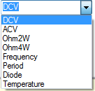

The best way to demonstrate driver development is to perform a walk-through on a simple but common instrument, for example a Digital Multi-Meter (DMM). Assuming that most readers are familiar with Visual Studio, we will create a class library called MyDmm that has two classes: a worker class called DmmDvr (DmmDvr.cs) and a form class for our GUI control called DmmCtrl (DmmCtrl.cs).
C#
is a strongly typed language so it is always a good idea to use specific types
for parameters, such as an enum.
In
days past,
integers were the rule rather than the
exception and were used for just about everything: instrument mode, setup,
measurement type, etc. Integer constants are most often used for this
methodology and often times frequently involved dozens (sometimes hundreds) of
different constants. This always makes it tough for the end-user to ascertain
the correct value to use for a particular driver method (or function).
Adding an enum significantly simplies the development
process, the end-user experience, and driver maintenance. Using enum types for
parameter values takes the guess work out of making a method call.
The
compiler will force us to use
very select parameter values.
For
example, since we are develping a DMM driver, we will add an enum type to the
worker class (DmmDvr) that reflects typical DMM measurement modes.
This enum type can be
used to make a call to
SetDmmMode() and
to update the GUI state. We want these modes to be available to all users of the
class object, so the enum type is public.
/// <summary>
///
Defines DMM modes of operation
/// </summary>
public enum
DmmMode
{
DCV, ACV,
Ohm2W, Ohm4W, Frequency, Period
}
Notice the triple-slash comments in the above enum. Triple-slash comments are essentially embedded XML statements that Visual Studio will parse real-time (as they are typed) and embellish the tooltip help for the developer. The comments can also be extracted via a number of third-party tools and used to produce driver help files. Developers should always add the triple-slash comments to all data members whenever possible, private and public, but as a minimum all public members should have the triple-slash comments. Visual Studio will expose this information to the developer.
Given that we have defined the enum type for the DMM mode in the worker class, we will use this object to populate the GUI with a DMM mode selection box. Likewise, we can read the selection from the GUI and make a method call back to the driver, all without hard-coding any of the DMM modes in the GUI.
Assuming we drop a System.Windows.Forms.ComboBox onto the
form class, we can populate all DMM modes into the box with one line of code:
foreach (string s in
Enum.GetNames(typeof(DmmDvr.DmmMode)))The C# code will
iterate through each enum and pull out the named string for each item.
The named values are then placed in the combo
box.
Adding a
SelectedIndexChanged event handler on the
ComboBox will allow us to extract the desired DMM mode and make a call back into
the worker class.
private void
comboBoxMode_SelectedIndexChanged( object sender, EventArgs e)
public
enum
DmmMode
{ DCV, ACV, Ohm2W, Ohm4W,

There is nothing
worse than pressing a button on a GUI to perform,
say a BIT test, and then watch your
application just hang there while the driver does a one-minute
built-in-test from a blocking method call.
A blocking method is one that does not return until the task is complete.
Threading can solve this problem.
UIs (User
Interfaces) should be snappy and responsive with no delays.
Any delay lasting longer than 30 milliseconds or so can be detected by
the user and soon becomes annoying.
The solution is to fire off a worker thread to make that blocking method call,
leaving the UI free to handle other events such as mouse clicks.
There are various
threading techniques in .NET and developers should be aware of threading issues
such as deadlock, thread locking, killing threads, thread synchronization, and
more.
However, in general,
firing off a worker thread is quite simple.
We use the ThreadPool to manage the thread and supply a callback to do
our thread-work.
ThreadPool.QueueUserWorkItem( new
WaitCallback(RunBitTest), null);
{
int result;
myDvr.RunBit(result);
}
We can be more
explicit when creating the thread and the following code will give us the same
result.
The advantage here is
that we have immediate control over the life of the thread and can kill it if we
wish.
While killing threads is
generally not a good idea it is sometimes necessary.
ThreadStart _threadStart =
new ThreadStart(RunBitTest);
Thread _thread =
new Thread(_threadStart);
_thread.IsBackground =
true
;
_thread.Start();
protected void RunBitTest()
{
int result;
myDvr.RunBit(result);
}
One
issue
to be aware of when using threading in drivers is to make sure the method that
is being called by the thread is thread-safe.
That is, what if we have a GUI button that runs
a BIT test on a separate thread by calling RunBitTest in the backend worker
class?
What if that same method is called at the same time by
a test program?
Unless the method manages the different
threads, there is a possibility of getting thread collision.
This problem is solved by locking the critical
code.
A thread lock
requires a lock object that must be a reference type.
Again, not difficult using .NET.
public void
RunBitTest(ref int
result)
{
lock
(myLockObj)
{
result = inst.RunBit();
}
return;
}
see also: Creating .NET Drivers - An Overview | Creating Drivers - Part 1 | Creating .NET Drivers - Part 3 | Using the SDK | Constants
Astronics Test Systems
Last updated on August 12, 2015 by D. Ignacio